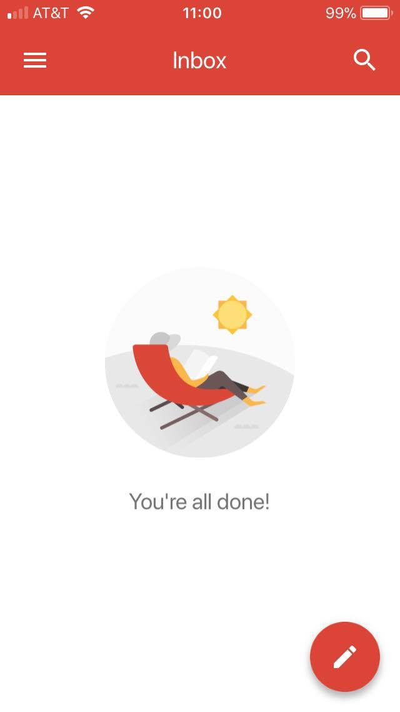
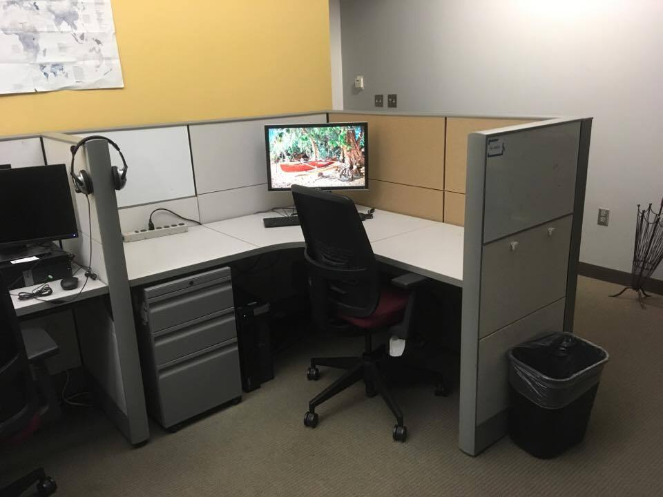

May-20-2018 Structuring the clickable sound buttons.
本週的目標是把隨意安排的聲音對字彙聲音比較規律的排在一起。所以最新想到的是用桌子來安排圖形大小（下面用的第一版本程式來源是https://www.w3schools.com/html/html_tables.asp）然後找著找著又找到了另外一個更好的東西（https://www.w3schools.com/html/html_images.asp）這個可以讓我在一個圖形裡面安排更多的語言字彙聲音學習（像是傳單跟其他的學習單就可以用這種方式表現。)
另外我這週開始寫我的每天日記了。傳統的說法是一張圖片可以包含千萬多的字。我們現在在做的事情是把千萬多的自塞進一張圖片裡面（希望我的朋友們可以從中獲得我在做什麼的訊息，也讓會看的同學能從中學到不同的句型。我應該跟學校老師問問看有沒有可以麻煩他們的回饋機制。)
然後如果有人想要用唱歌學中文的話我跟朋友找到這一首歌（https://www.youtube.com/watch?v=fdQgPu3iUYk）。感覺簡單又好聽。
最近的讀物是有關教學方(直接教學）與學校文化與老師對於學生成長的關聯。（如果連密西根跟俄亥俄州都可以為了教育做合作研究了，還有什麼事情是不可能的。)
好吧。就先寫到這邊了，還要去錄影跟洗衣服了。我們各自好好照顧自幾，下次再說！
陈老师
2018年5月20日
Useful link for beloved friends ❤
https://translate.google.com/
May-13-2018 Testing Sounds click
So the idea came up during class about creating and online inventory of words used in class and this below is a test button for playing sounds. Once the task is completed image and word-pairs can then be accompanied with sounds cues.

And above is a gif from wikipedia. Just a demonstration that we can add gif to Github webpage as well. So the word pair can work for instruction as well :) So excited!
And mission accomplished!! Let me work on the the layout next time.
Let's reflect on what we did today.
1.) Finished reading for the day on ESL/ELL student learning style preference.
2.) Did laundry :)
3.) Learned how to add .mp3 sound to image for HTML website.
4.) minor modification to web slogan and introduction paragraph.
陈老师
2018年5月13日
Useful link for beloved friends ❤
https://translate.google.com/
Apr-19-2018 准备好了吗？
亲爱的同学们，老师在放假的期间把电脑更新了一下。现在要测试的东西有以下几点。
1.）网站更新步骤顺利。
2.）可以更新中文
当这些都确认完之后要做的事情有以下几点。
1.）把我研究生的贴图换成老师
2.）更新一些部落格的内容
3.）放一个中文区域给家人与朋友给建议
4.）想到再说吧...
先试试看这可不可行。明天再看看有没有可以更新的东西。我们现在学到媒体的重要性，与朋友交往固然很重要，但别把所有宝贵的时间都花在电脑游戏上啊！
陈老师
星期四
2018年4月19日
Useful link for beloved friends ❤
https://translate.google.com/
Oct-29-2017 Delayed Update (Those who are able, do more.)
So one of the PG rated quote I can use here is "those who are able, do more." I think that's the model I am powering through right now. Copying from a previous post about my daily work we have the followings:
1.) 08:00 AM - 04:30 PM: Full time substitute.
2.1) !(08:00 AM - 04:30 PM): Read 1 paper.
2.2) !(08:00 AM - 04:30 PM): Planet Fitness.
2.3) !(08:00 AM - 04:30 PM): Coursera.
2.4) !(08:00 AM - 04:30 PM): Live streaming for an hour on L1, L2, and anything I can think of.
2.5) !(08:00 AM - 04:30 PM): Preparing for Graduate school application (GRE)
What prompted the blogging also got the streaming going. To know is one thing, but to show is another, and so here's a running joke in the family. So far I am the only one that have read "Old man and the sea" or whenever I post the reading review from that book.
And below is just a screen shot of an empty Google inbox. Fun stuff.

The idea is to talk slow (or fast, whichever fits me better). Build up a repertoire for content planning and just to have fun with friends.
In the unlikely event that my students come across this website. Some of this won't make much sense now, but they will be more clear as you progress forward with your study.
You are in a unique place where you are learning Chinese in an Englishg environment. Most of your peers are in similar situations and so knowing another language doesn't seem all that special to you now. As you move onto high school and college you'll meet people from a variety of background and this may be the first time you come to be aware of your uniqueness and strength (to know what water is, a fish needs to first have a view from outside the tank.) When this happens, you'll have the option of sharing your strength and learn from others, or choice to keep them to yourself. There is no correct choice, they're just options along the way.
I was shy growing up and and have chosen to kept these information mostly to myself (at the time I didn't want to stand out.) and if I do, I made sure everything I dissemiated are PG rated and are polite and well and reflect positively upon the cultural group I represent.
Now that my work are focused around teaching, I just thought it helpful in documenting what I do and want to improve upon. And since our students are in need for more exposure (I teach at an immersion school.) I just thought I may as well broadcasting my learning live and have something I can use to bug my students on increase in exposure time. Haha. And also have something that my friends can spend their valuable time with on a Friday night.
Please note that what I do online are in no ways affiliated with the school I work with and may contain errors. At current state I am merely jumping around topics I think are of interest. The best way to learn a language is still through systematic process such as school or proper online courses where the curriculum is designed to have the most comprehensive coverage.
The subtitle are borrowed from my favorite streamers in the entire universe "Be a better teacher." Now borrowing again from JFK. Becoming a better teacher will not happen tomorrow, nor will it happen next week, not after Christmas, and certainly not after the asian Lunar New Year, but let us begin.
6th Week complted.
- Ho-Zhen [2017-10-29]
Sep-17-2017 What? Another Week (2 actually)?
So here's something about my own learning/perception style. I've come to learn that I am more aware of time if reading from an analog clock display compare to a digital interface. This is a very interesting finding and I look forward to bumping into some cognitive study that explains this.
When I mean that I am more aware of time I mean that when proceeding to a schedule event, I found that the change in the digital numbers doesn't trigger any urgency (11:59:59 and 12:01:01 feels the same), but the passage of time is felt when it is displayed as portion of a circle. Just some interesting thing I came to learn about myself. And since we are on the topic of clock usage and display, my watch preferences are those with battery life of at least 1 year.
And here's a link on why you always see clocks advertised in the 10:09-10:10 posiion!
I always remember mom saying "Look, the clock's smiling!" Interesting how mom's advice and voice keeps you company, for life.
Here's a lesson on business Chinese. If you're intending on sending someone with Mandarin Chinese knowledge a gift. Try to avoid anything that is related to clocks. The idea is that the saying of giving a clock can be a pun for attending someone's funeral. Just something to keep in mind about. As for me, no care is given, all gifts are welcome (smiley face.)
And here's a book that I just recently finished. "The Great Divorce" by C.S. Lewis. This is one of the building block that I mentioned earlier about books. This one again is a book recommendation that I requested from a friend.
The book is about the experience of taking a bus going from Hell (or Purgatory) to Heaven. The book go on and explain the experience and stories of encounters between transparent figures and solid beings; about how hard it is for the storyteller to maneuver in the new world and how everything seem to obtain unexplainable inertial and mass (as to why this is, you'll have to read the book yourself.) The book goes on explaining the need to move on and let go of past perceptions; to not be greedy and learn to live in the moment; to not be possissive over others, and in the end stop being stubburn and learn to love. The ending part was a little complicated for me with time and space and decisions made long long ago in the past, but read through the whole book and liked it a lot.
This brings us to something interesting I want to talk about. Suppose you're someone that shares some common friends with me. If I told you this is from some mutual friend's recommendation will you be interested in who I got this book recommendation from? The answer to this question is, I am not going to tell you (haha.) The thing is, every connection is unique, what I learn from the book and their respective recommender will be unique from someone else. The combination is unique and it is for you to discover.
Oh! and in recent news. The NEGSWS conference happened this past weekend! Now moving on with the new week.
Evil can be undone, but it cannot 'develop' into good. Time does not heal it - Preface from The Great Divorce
- Ho-Zhen [2017-09-17]
2017-09-03 (08-18) "One should be hopeful but expect to remain seated" -Julia Roberts on Late Show with David Letterman
Job search can be like the quote from Julia Roberts. Once the best profolio is submitted for evaluation, the only thing that remains is to be positive and hopeful.
(paused resumed on 09-03-2017)
So the Machine Learning (ML) course was puased and I think I'll be restarting it since we finally completed the two independent reading that was the main distraction this summer. And one of these days I'll have to return to the storage place and find the education books and probably start that alongside ML course from coursera.
And in brighter news, postcard activities have resumed! I am glad to have completed 2 postcards and a letter. As I mentioned with another postcard-buddy it is good to know that people are listening out there. As we progress on with technology, it is good to remind outselves the personal connection that does not live on a bright screee but something that occupies physical space and takes effort to delete.
Here's a note to a hypothetical friend on how postal service works. So just like the "conventional" mailing serice you know of, such as UPS, Fedex, DHL, etc, the postal service is the same but powered by your tax money. The way it works it unlike taking your package to the store (I know you're very busy) you take advantage of the blue box instead. If you are an active mail people, this service is extremely convenient! The way you pay for the service is by buying stamps and stick them on the document indicating the proof of payment. For me, the beauty of the USPS system is the forever stamps. The concept of forever stamp is time value of money and compound interest. So that it doesn't matter how much the service cost varies in the future, your forever stamps will always works (so the ones you got from me works, 10 years from now, assuming that your document is within a certain weight and size*) There are three (3) levels of stamps that I use. They are the international forever stamps, the domestic forever stamps, and the domestic postcard stamps. Now that we have stamps covered, we move on to the conventional locations of interest on a letter and postcards.
As illustrated below, the stamps is usually placed on the upper right corner of the side of your document where it is labeled. The receiver's address is located on the center region for letters and bottom right for postcard. For the letter you place the sender's address on the upper left corner (so if the address is wrong it can be return to the you, or I can send you a return postcard with this information). As far as I know, you don't include the senders address for postcard.
Now that your document is completed and ready for hte journey. You can take it (them) either to the post office (but really, you don't need to) or one of the blue box nearest you. And for your convenient, image of a postbox is shown below.
And here's an interesting link from USPS about the history of the mail collection boxes.
One book I'll recommend for the postcard culture is "84, Charing Cross Road" by Helene Hanff. I think it's a good lesson on patient, and some believe on the system. This for me was a good reality check when almost everything these days comes with a "delivered" or "read" tag with it. I like to think of sending someone a letter or postcard as a shared snapshot of space and time. There are more stories about the use of this technology, but that can wait until next time.
Did you know you an print photos at CVS? Heading there right now.
- Ho-Zhen [2017-09-03]
2017-09-02 Assumptions on calculation
Something that made little sense when I was in school but I've learned to be more important than carrying out computations are the making of assumptions, and checking them. Since quizes and exams are usually sized to be within a certain range of material, getting the right number is not that hard. When I can boost my GPA by getting these numbers and explanations are strickly required, one falls for the trap of reaching conclusion before checking all assumptions.
So let's explain the power of assumption and what we can do with it. What assumption means to me in making the following calculation is I understand there are complex underlying work at play, but I am treating them with a rough estimation of the concluding result. This is good for estimation and giving a number. For the blog post below this is similar to checking which county my destination is.
Posted here are images of the 2017 eclipse that got everyone looking up at the sky on Aug, 21 2017. Since all life on Earth is supplied by the energy received from the Sun. Let's see how much energy was blocked out by the Moon.
Here goes our first assumption.
Assumping that the solar radiation flying towards Earth can be treated as parallel. That is, the amount of solar radiation blocked by the eclipse can be treated as the center-cross sectional area of the moon. Image above illustrates the concept.
In calculating the energy blocked by the moon, we treat the reflected solar ray as the average solar irradiance received on Earth. Therefore the unit rejected solar irradiance (I) ~ 1,360 Watts/meter 2 (J/s/m2).
The second assumption we make here.
Unless under Totality, solar insulation is fully received (1,360 Watts/meter2, J/s/m2) Here in Amherst we experienced partial eclipse, but I still felt the heat from the sun like we usually do.
From the eclipse website we learned that Totality initiated in Oregon at 10:19 AM and ended around 14:44 PM at South Carolina. This gives us the Totality duration as follow (and link to time zone adjestment.)
Then the energy NOT received during the 2017 eclipse becomes the product of lapse time, unit energy input, and area covered.
To shrink this number into something that makes even the most remote sense. Let us convert this number into US crude oil consumption.
According to the U.S. Energy Information Administration (EIA). 1 barrel of oil is equivalent to 6,031,000,000 Joules (6.03⋅109 J).
Dividing the total energy blocked by the moon obtained above by this per barrel energy count. We arrive at a barrel number of 11,825,302,603 barrels. Again from a EIA estimation, the averaged daily consumption of the United States was 19.63 million barrels (19,630,000 barrels per day). Taking the quotient result of the two numbers yields ~602 days of oil consumptions as reported by the 2016 estimates (602 days ~ 20 months ~ 1 yr and 8 months.)
All guesses should be double checked. So let's think of the situation from the receiving end. "If" we assume that the sun rays approaches parallel before it race past the moon and hits our Earth. Then we can think of the situation at hand as a solar farm the size of the moon's cross-sectional area. Which is calculated previously to be 9.5⋅1012 m2. Now the solar irradiance is the same as before at the rate of 1361 W/m2 (J/s/m2). Multiplying the two values by the time lapse calculated beforehand to be 1 hour and 32 minutes (~92 minutes, ~ 5520 Seconds) we arrive at the same value.
This is still a very large number (and we're assuming 100% of the energy can be utilized.) Let's take into account the best efficiency of current solar panels (>32%) then the number drops to 200 days of crude oil (by barrels). Interesting how this works.
Here is a picture I took on the way out. Next time I think the fun will be to see how frequent the eclipse have to have in order for us to remain on current pace and meet the 2 degrees Celsius.
Could this be our way out? Instead of internal control we send excessive product into space to create an umbrella like a beach umbrella on a sunny day to cool off?
Make up are and shades are good on a bad day.
- Ho-Zhen [2017-09-02]
2017-08-17 Phone call with Mom and PCA
Studying away from home is no special thing to a lot of people. For me and my family we try to have weekly calls just to keep everyone updated. Having weekly updates with family prompted the ability to explain what happens in school to a broad range of audience (mom, dad, and sister.) which can be a ways a fun way to check ones own understanding against the questionings coming from, for example, mom (smiley face.)
I found Principal Component Analysis (PCA) a fun concept to explain. Of course there are more complex detail to the topic, but simply put, PCA is like a GPS system giving driving directions to a destination.
Let us take a step back and think what modelling and our math is all about. We are looking for a hidden answer and finding solutions (or to explain it) to a given system. Think of this process as explaining your address (solution) to someone who is visiting you for the first time (someone searching for your place with almost infinite paths to take.) There are many ways to explain where I live, the way PCA explains it is by explaining your direction and progress to your place in terms of major highways. For example, to get from Boston to Amherst, I-90 represents most of the traveling one will be doing. Then a second path that takes up most of the remaining progress can be taking I-91 north bound.
Below is a Google Maps direction from Boston to Amherst. Notice that there are directions before one gets on I-90, and streets to follow after exiting I-91. But most of the trip can be explain by the simple I-90 and I-91 instructions.
There are countless ways to get to Amherst from Boston. But going by car, the two interstate highway explains most of the direction and progress (are you on I-91 yet? Yes? Then you are not far from us now.)
I am sure there are many other ways to explain PCA in general terms, but that is my phone call explaination. Let me think of what can be next and perhaps shift these ideas and start populating the citizen science section (current name I came up for the project archive section!)
So some to-do list for the website.
1.) Content creation.
2.) Resume update.
3.) Contact page.
4.) Citizen Science section.
5.) Profile picture, and
6.) Website description.
7.) Intellectual Property lookup and tag.
Power leveling until next time,
- Ho-Zhen [2017-08-17]
2017-08-15 Twitter feed update
10 days since our last update! Goodness time flies. Last update I did but not mentioned are the Twitter feed on the index/home page. The information provided from @TwitterDev worked, just needed some additional CSS comment (thanks to @UM_CEE for the help.)
In short, the index is now fitted with feed from Twitter, and the office space has since been cleaned, as shown below.

Other than that, things are more or less the same. I am talking more on DnD these days, and I am actually looking forward to playing the game now. The book is scheduled to arrive tomorrow. Can't wait!
Job search is continuing as usual. Like the discussion with someone else, it is like a relationship, it's either a 1 (get hired) or 0 (nothing yet). Some cognitive learning about myself also helped in reviewing the resume and navigating the job search.
It was unfortunately that one of the interviewer was looking for app developer (doesn't line up with my skillset, yet.) But since we're done with Linear Algebra and reaching the last quarter of Statistical Hydrology (13/16). Let us begin machine learning from Coursera (note the use of buzzword! good for proposal writing!)
This past Sunday roommate A and I went to Northampton (aka NOHO, but known to locals as Hampshire) for food and scouted for place to impress before an important people join us next week.
After food, we walked around and talked about recent events and was interrupted by some nearby noice around city hall. It turns out this was a gathering for the Virginia event that happened the day before (I was surprised at how fast the organizing team got things in place. Though I think it was a surprised to the police.)
We left the demonstration because roommate A said he wanted to try another book. Unfortunately the bookstore had closed at this moment, but we started an interesting conversation about books. Let me leave my book conversation for next time. Meanwhile, please asnwer this question: What is your one favorite color? Mine is red.
God Red! Go Blue!
- Ho-Zhen [2017-08-15]
2017-08-05 Postcard from Bangladesh
Now that the days with Linear Algebra forward process is done, I am now working my way backward to the start. And statistical hydrology is still progressing and I think the next thing to look up right now is command for residual plot in R and other software program.
Something I found interesting is the recent progress on D&D (Dungeons & Dragons ) game play. I like it. From watching Day9.tv the advice on D&D is to say the first thing that comes to mind, I think I am still a little hesitatant on that front. Something to work on from all the reading that I have done. I also like D&D because for me it shows that the only thing one need in order to have fun are friends and imagination. The story doesn't play itself, it evolves from player input.
Recent reading have been on Engineering Education (ASEE) with a focus on global competencies and social justice (few hydrology and climate change papers.) I think even though my background highly identifies with global experience. I am more interested in cognitive learning and knowing. But that may be subject to change. I just like to be aware and conscious about things happening.

I rode to the bridge and back yesterday afternoon. Pictures and stories about the bike trail for another time. For now I want to share a postcard from a good Panda who is currently conducting work in Bangladesh. Postcard in 2017? I think that is a sign of a good Panda friend.
Panda!
- Ho-Zhen [2017-08-05]
Jul-25-2017 Weighted Least Square (WLS)
Here's a picture of my study progress? Their topics happen to line up on the same day.. Coincidence?

Building up to today's reading. Things were kind of lining up so one can kind of have an idea of what tomorrow is going to bring. But I just didn't expect the two to line up on the same day.
Weighted Least Square (WLS) in short, can be thought of as imaginary gird scale change (squares, from my understanding.) Error for a regression line is calculated as the measured distance between actual data points from the predicted data points (the regression line.) For some cases, however, not all measurements are created equal. As a result, errors are assigned different weights before they are summed for the entire line, thus the name weighted least square (WLS).

Another picture of happiness is the Hitachi steamer. It can be used to cook rice and all the other stuff. The steamer is tested and good for rice. The inside sticker also mentioned for safety (and convenience) cook using a removable container (so the cleaning is easier.) Very happy with the new toy and the cumulative time it will save moving forward.
Another thought before we go. Since I am no longer affiliated with UMass. Time for new cards? What about just a line with the URL to this site?
To all the pandas out there,
- Ho-Zhen [2017-07-25]
Jul-21-2017 Self-Search and content creation.
As I enter the job search progress, it occur that this will be a good time to restart this section as I move forward in tallying what I have accomplished and perhaps do some reflection on life.
Here a list of what a normal day look like recently.
1.) Job search
2.) reading Linear Algebra (David C. Lay)
3.) reading Statistical Methods in Water Resources (Robert Hirsch)
4.) read another paper
The first three came along this summer and the last one is the new resolution this year. The motivation for it shall be discuss later. I love this paper thing and it is awesome!
One question that I was forced to reflect upon this summer was the initial intention on pursuing a graduate degree, and this has always been to teach STEM at the college level. From a recent conference learning and some discussion with specialist in this field, it seem that education, not engineering, will be the key to getting me there. So the reading has change from climate change to engineering education (more on that later.)
Since both our attention span has reached its limit, here's a picture for distraction. Picutre is of Amherst Coffee
taken from the Jones Library on a summer afternoon.

And congratulations on a former colleague's accomplishment. Congratulations on Cynthia Castro's doctoral defense.
Until next time.
- Ho-Zhen [2017-07-23]
Feb-19-2017 First post. AGU 2017 Fall Meeting
Just finished today's assign reading and wanted to update GitHub website thing.
Here's a picture of Colin and I with my poster at the 2017 American Geophysical Union (AGU) Fall meeting.
I had a good time at AGU seeing all the mythical authors previously exists only in Web of Science in person, as well as meeting the family. I think it was just a good feeling knowing how our work fits into the larger picture. Surface Water Ocean Topography (SWOT) Mission, different groups that are also study the cryosphere in different ways, and other hydrology work going on elsewhere. It is good knowing we're not alone :)
- Ho-Zhen [2017-02-19]